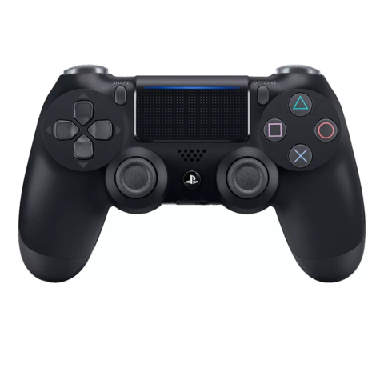
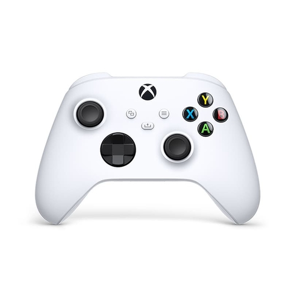

Mando PS4
El mando de 2º generación de la PS4 mejora a su antecesor en los aspectos más controvertidos, (me he esperado bastante para escribir con criterio)
Adquirir
Mando PS5
La parte trasera es ligeramente rugosa y, con una buena lupa, o con la ayuda de una cámara, veremos que esa rugosidad la forma
Adquirir

Mando Xbox
Es el principal controlador de la consola Xbox 360 de Microsoft. El mismo tiene dos versiones, con cable puerto USB de la consola o inalambrico.
Adquirir